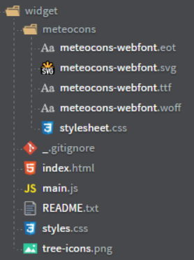

Resumen
Tabla con las extensiones de Brackets instaladas y su utilidad
Ver TablaTabla online de las extensiones de Brackets instaladas
Lorem Pixel
Imagen generada por el plugin Lorem Pixel (se renueva cada vez que se refresca la página):
Imagen cargada por Lorem Pixel
Carga una nueva imágen de las dimensiones selecionadas al crearla.
Sección para cargar y ajustar imágenes de Lorem Pixel
TODO
Plugin para crear TAGS comentados (unilineales) en código:
TAGs para insertar los TODO en el código
Accediendo mediante el botón de la barra lateral de extensiones, se ven los diferentes TAG comentados con sus respectivas líneas en el archivo. Se puede ajustar para mostrar los de todo el proyecto.
Sección de TODOs con todas sus alternativas
Brackets Tree Icons
Los iconos aparecen automáticametne dependiendo del formato del archivo (ver imagen):
Imagen de Iconos Brackets Tree Icons
Outline List
Muestra la estructura de elementos para cada tipo de archivo
Outline HTML
Captura del outline de un archivo.html
Outline JS
Captura del outline de un archivo.js